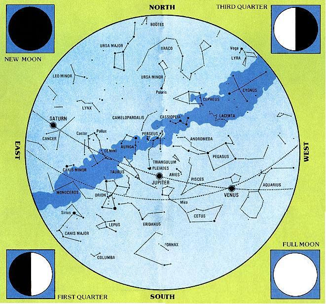
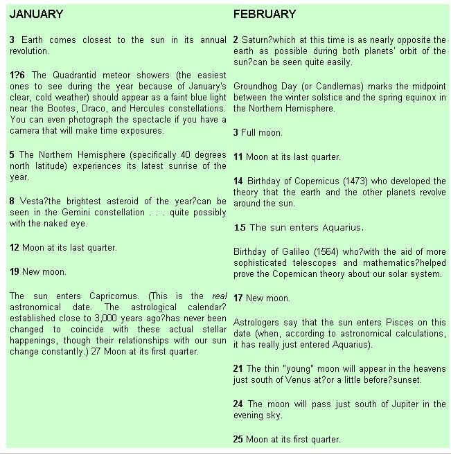
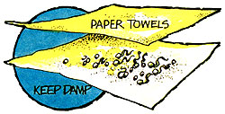
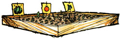
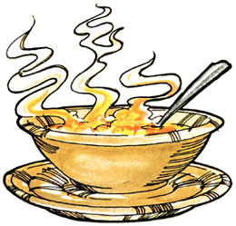
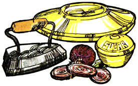
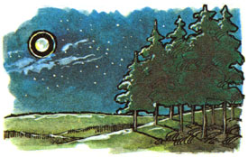
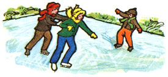
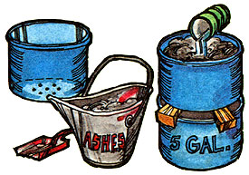

This may be the first generation to set foot on the moon and shoot rocket probes into the reaches of outer space. But, man for man and woman for woman, great granddad and great grandmother-or, for that matter, almost any primitive tribe of almost any past age?knew a lot more about identifying the stars and planets in the night sky than most of us currently do.
And so, with the help of Guy Ottewell (author of Astronomical Calendar 1977, available for $4.95 from the Department of Physics, Furman University, Greenville, South Carolina 29613), MOTHER is going to try to change all that.
The foldouts in this and the next five issues of the magazine will be printed in the form of an old-time almanac and star chart. Save the series. Practice with it. And, if you're a typical child of our modern TV-dominated society, you should know one heck of a lot more about the identification of heavenly bodies one year from today than you know right now. Anyone for celestial navigation?
The chart pictured here maps the evening sky as seen from about 40 degrees north latitude (roughly the latitude of Philadelphia, Pennsylvania . . . Indianapolis, Indiana . . . Denver, Colorado . . . and Reno, Nevada) at 10 p.m. on January 1, 1977. Although the sky "turns" from month to month as the earth orbits the sun, the heavens will still look quite similar to this at 9 p.m. on January 15, at 8 p.m. on February 1, and at 7 p.m. on February 15 . . . except that the planets will have moved noticeably. If you allow for different times and/or locations when you use the map, however, you should find this guide substantially correct throughout January and February for most of the U.S. and the southern regions of Canada.
Until you become familiar with this star chart, the best way to identify celestial objects is to go outside in the evening, face south, and hold the map overhead so that the stars in the sky correspond with the markings on your guide. (If you face north, east, or west to look at the sky, be sure to turn the drawing to make it agree with the appropriate compass point . . . and then just imagine that the heavens form a huge "dome" which reaches down all around you to the horizon.)
Begin by identifying a few major stars or constellations. Pick out, say, the Big Dipper (Ursa Major) in the northeastern sky. Then imagine a line joining the two stars that lie opposite its "handle" and trace the connector across the heavens till you find Polaris. This key star?located directly north?is the last in the handle of the Little Dipper (Ursa Minor). Once you have these bearings, you'll usually find it much easier to identify other prominent constellations.
If you're just learning to recognize specific constellations for the first time, wait at least a few days before or after the full moon (the dark of the moon is best of all) so that its bright glare won't hide the stars. You'll also want to do your sky watching as far away from street or traffic lights as possible. Use a dim flashlight to illuminate the star chart, and allow plenty of time for your eyes to become readjusted to the darkness whenever you look up.
Although you can see many stellar objects without any aid, a good set of binoculars or a small telescope will help you locate the fainter bodies shown on this map.
January's an especially good time of the year to make sure your gardening equipment is in top running order. Take advantage of this off-season period to oil, sharpen, and otherwise care for all tools, clean up your greenhouse, and-in general?do the myriad little odds and ends you just don't have time for the rest of the year.
Also, be sure to run a germination test on any leftover or home dried seeds to determine in advance the ones that will grow and the ones which must be replaced. Just sprinkle a few test selections of seed between damp blotters and discard the untested portion of any batch that doesn't give you at least a 70% germination.
Sometime in February (depending on your location) start the tomato, pepper, eggplant, and cabbage seeds indoors that you'll later transplant to your outdoor garden.
And if you're thinking of making a hotbed for early spring planting, February is the month to begin hauling in the manure that you'll use as a heat source. Turn the pile several times before you place it in the frame. Then tramp the compost down evenly, cover it with a few inches of dirt, and allow the temperature inside the bed to rise and then fall below 85 degrees Fahrenheit before you sow any seed.
One extra tip: Keep the watering and feeding of indoor plants down to a minimum during these winter months. Overwatering simply invites fungi . . . and since plants generally grow more slowly during cold weather?even when they're inside?they need fewer nutrients.
After an icy winter's day tromping the fields and woods or skimming cross?country on skis, most folks feel like wrapping themselves around a steaming hot bowl of something both hearty and just a little out of the ordinary. This old midwestern farm recipe for Cheese-Potato Soup fills the bill on both accounts.
For two people (or one absolutely famished individual), peel and boil two slightly-larger-than-medium-sized potatoes. Drain the potatoes when they're done, but save the liquid in which they were cooked. Mash the tubers well, add the water they were boiled in (and more liquid if necessary) and salt and pepper to taste.
Next, brown 2 to 2-1 /2 tablespoons of flour in 2-1/2 tablespoons of butter. Take care not to scorch the mixture (by stirring constantly, you can turn the flour and butter a rich brown without burning them). Add the browned flour and butter to the potatoes and water and boil the whole shebang for two to three minutes while you stir it.
Finally, cut a good chunk of longhorn, "rat trap", or mild cheddar cheese into small pieces (whack up enough to fill a big soup bowl one-third full) and cover it with the thick, bubbling potato-butter-flour formulation. Dice a quarter slice of onion on top of each serving and sprinkle a few drops of vinegar over all. Break out the spoons and crackers and eat it hot! This simple but robust one?dish meal is guaranteed to warm you from the inside out.
Take the chill out of those frigid north winds by planting a column of evergreens to "break" the force of each gust and to channel the frosty breezes upward over your house. The sheltering pines will also shield your dwelling from drifting snow, and provide an attractive year-round home for insect-eating birds.
Slice a purple onion (the kind you make purple onion sandwiches' with) and stack the pieces?with alternating layers of sugar ( lots of sugar)?on a heavy crockery bread-and-butter plate. Then turn another?plate upside down over the heap of ingredients And top the entire stack with an old-fashioned sadiron, a couple of bricks or anything else that's heavy.
After half a day or so of this compression, remove the weight and carefully pour off some of the magic elixir that has collected in the bottom plate. Then take a spoonful of the formula orally as you need it.
And by the way: If you replace the weight, this setup will keep on squeezing out cough syrup for several more days.
Why not say "You're something special" to a loved one this February 14 with a homemade Valentine? They're fun to create . . . and the possibilities are endless.
Check your attic, basement, or spare room for bits of old lace and ribbon, scraps of wallpaper, pretty fabric, old greeting cards, early magazines with colorful illustrations, etc.
You can even use pressed flowers and ferns from your summer garden?or try pine needles, holly berries, seeds, and other winter vegetation?as decorations. Arrange and rearrange the knickknacks till you find the "right" design for each card. Then glue them down to a paper or cardboard backing.
And you can be just as original in finding those backings for your Valentines. For large flat cards, cover light cardboard (recycled from a box of soap powder )or cereal) with pretty fabric, wrapping paper, etc. Then again, small print shops may have an overstock of wedding announcements or business communications that you can "pretty up, and infuse with new life. Dig in the trash, keep your eyes open . . . you'll find what you need.
Once you've sent a few Valentine wishes this way, you just may find yourself making birthday cards, Christmas greetings, and a whole slew of other mementos that your friends will probably cherish far more than "store-bought" remembrances.
The old saying that a halo around the moon or sun is a frequent portent of rain or snow is true. It's based on the fact that such a circle is formed (actually, in our own eyes) when we look at some of the moon's or sun's rays as they're reflected through the frozen crystals of moisture in thin, high cirrostratus clouds. And on the fact that such clouds generally move along 12 to 16 hours ahead of broad, moisture-laden warm fronts. And on the fact that warm fronts usually bathe wide areas in slow, steady precipitation as they sweep across the continent.
Bear in mind, however, that you'll occasionally see one of these halos come and go as the sun or moon passes behind patchy and scattered cirrostratus clouds. When this happens (especially if there's a westerly wind), you're probably safe to forget about rain during the next 24 hours. It's far more likely that the weather will continue fair with no change at all.
In other words, halos around the sun or moon can tell you a lot about the weather . . . once you learn to "speak their language".
If you live in an area which has prolonged below-freezing temperatures, a backyard skating rink can provide weeks of wintertime fun.
Just enclose a fairly level space with 2" X 8" boards, an earthen bank, or an iced-over wall of snow . . . and pack down any freshly fallen snow that's inside the enclosed area.
Then build up the ice in layers by alternately flooding your rink with a fine spray and then allowing it to freeze solid. (You may find it helpful to flatten the crust with a lawn roller after it begins to harden the first couple of times.)
When the ice reaches a thickness of 3/4" or so, pack small holes with slush and cover the rink with a final thin film of water.
You can then periodically resurface the "pond" in the same way as the season wears on.
Punch drain holes in the bottom of a five-gallon can, place a five-inch layer of straw inside, fill the container with ashes, and mount it on top of another five-gallon can. Then pour water into the upper vessel and, as it trickles through (a slow process when done correctly), add a little more each day until the lower can is nearly filled with . . . homemade lye water.
Boil the solution in the lower can until a chunk of potato will float on its surface and then use it in your favorite soap recipe or in any other way that you need dissolved lye around the homestead. (And be careful! It can burn just as badly as the lye you buy in a store.)
And if you don't want to make lye? Then dig the dry wood ashes into the Irish potato patch or in around the fruit trees next spring. The potash'll do 'em good.
Now that the holidays are past, it's time to find a new use for the Christmas tree (if you didn't buy a potted one that you can transplant into the yard next spring). Here are some ideas:
[1] Take your tree?and all the extras you can collect from the neighbors?and pile 'em into the corners of fields to make cover for quail, pheasants, and rabbits.
[2] Tie a couple of rocks to each evergreen and drop it into the pond (if the mini?lake is frozen over, drag the tree out to a strategic spot on the ice and leave it for the first thaw). Small fish appreciate a little brush on the bottom of a farm pond . . . it gives 'em a chance to hide from the big lunkers and, maybe, grow into lunkers themselves.
|
 |
 |
 |
|
 |
 |
 |
|
 |
 |
 |